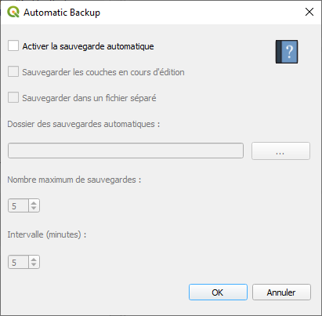

Documentation du plugin Automatic Backup¶
Présentation¶
Ce plugin vous propose de créer des sauvegardes automatiques d’un projet Qgis.
Plusieurs options s’offrent à vous :
Créer une sauvegarde selon un intervalle spécifié par l’utilisateur. Elle se situera dans le même répertoire que celui du projet.
Sauvegarder les couches en cours d’édition.
Enregistrer un certain nombre de sauvegardes, dans un dossier spécifique, et toujours selon un intervalle.
Fonctionnement¶

Cocher uniquement « Activer la sauvegarde automatique » pour créer une sauvegarde dans le même dossier que celui du projet ouvert.
Définissez ensuite à quelle fréquence vous souhaiter réaliser des sauvegardes avec l’outil « Intervalle ».
La sauvegarde portera le nom du projet avec l’extension « _backup ».
Cocher l’option « Sauvegarder les couches en cours d’édition » vous permet d’enregister vos modifications dans les couches concernées.
Si vous cocher « Sauvegarder dans un fichier séparé », indiquez l’endroit et la quantité maximale des sauvegardes que vous désirez.
Les sauvegardes créées porteront le nom du projet avec une extension indiquant leur date de création/modification, sous le format « Nom du Projet »_backup_Année_mois_jour_heure_minute.
Exemple : « test_backup_2020_01_02_18_48.qgs »
{kind=link}
Code source¶
Le code source est disponible à l’adresse suivante :